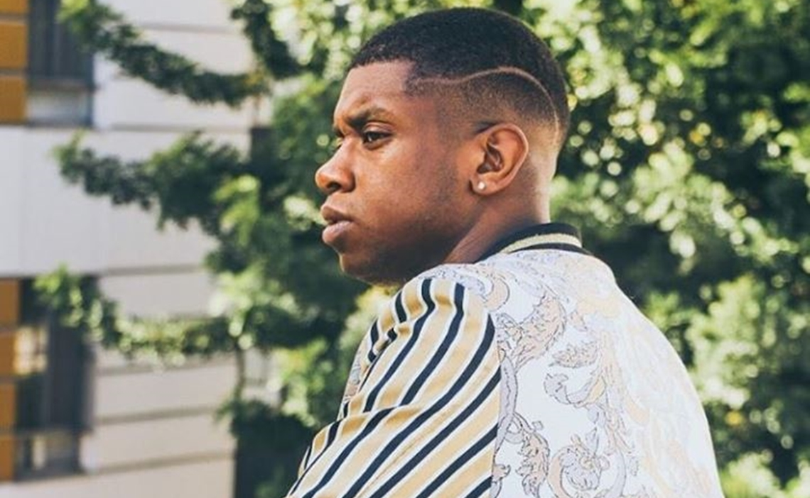

Matt Sallee

Matthew Levon "Matt" Sallee é o segundo baixo do Pentatonix, substituindo o ex-membro Avi Kaplan. O primeiro álbum de Sallee é A Pentatonix Christmas Deluxe.
Biografia
Matt nasceu em Baltimore, Maryland e foi criado em La Plata, Maryland. Ele tem cantado a vida inteira. Ele começou a cantar na igreja muito jovem, sob a direção de seu pai, que era pastor de música. Ele então fez muitos shows e musicais em suas escolas e na área do sul de Maryland.
Ele teve formação clássica e cantou em todos os corais disponíveis durante todo o ensino médio. Ele já se apresentou em vários locais de prestígio, como o Kennedy Center, o Mormon Temple Visitors Center e o Apollo Theatre. Ao se formar, ele foi aceito no prestigiado Berklee College of Music, onde ganhou uma infinidade de oportunidades, como cantar para o presidente da escola e o Comitê Consultivo Presidencial como único artista e se tornar membro de um dos melhores grupos universitários a cappella do país, Pitch Slapped.
Matthew se juntou ao grupo em seu primeiro semestre e passou a liderar o grupo em seu último ano na Berklee. Ele teve o privilégio de agraciar o palco com artistas como Jessie J e a lendária lenda viva vencedora do Grammy, Miss Jill Scott.
Ele gosta de cantar todos os gêneros e se orgulha de sua versatilidade para trazer qualquer estilo de música que melhor se adapte ao público.
Ele anunciou seu noivado com Sarah Bishop em 22 de outubro de 2020. Eles se casaram em 2 de janeiro de 2022.